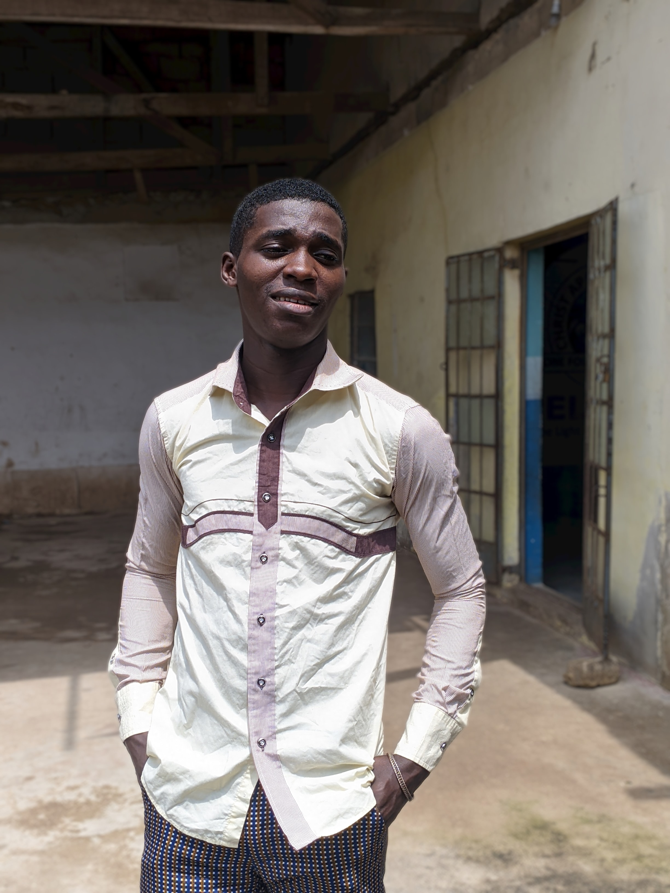

About Me
Hi, i'm Adebiyi Adeshina, a proud student at Altschool. I am passionate about development and the endless possibilities it offers to create innovative ssolutions. As an aspiring software developer, i am eager to dive into the world of coding and expand my knowledge and skills to be a valuable contributor in this field.
Why Altschool?
I joined Altschool beacuse the institution philosophy aligns perfectly with my goals and learning style. Altschool fosters a personalized and adaptive approach to education, allowing students to take ownership of their learning journey. This UNique approach, combined with a strong focus on technology and project-based learning, is the ideal environment for me to thrive and grow as a software developer.
My Goals And Aspirations
During my time at Altschool, I aim to:
- Master different programming languages and frameworks.
- Develop a deep understanding of software development methodologies and best practices.
- Create innovative software solutions that have a positive impact on peoples's lives
- Enhance my problem-solving abilities and critical thinking skills
- Collaborate effectively with other students and industry professionals in projects and team settings.
Conclusion
I am thrilled to be a part of the Altschool community and embark on this exciting journey towards becoming a skilled software developer. with the support and guidance provided Altschool's remarkable faculty and fellow students, I am confident that i will achieve my goals and make the most out of my time here.
Lets code and create a brighter future together!!!